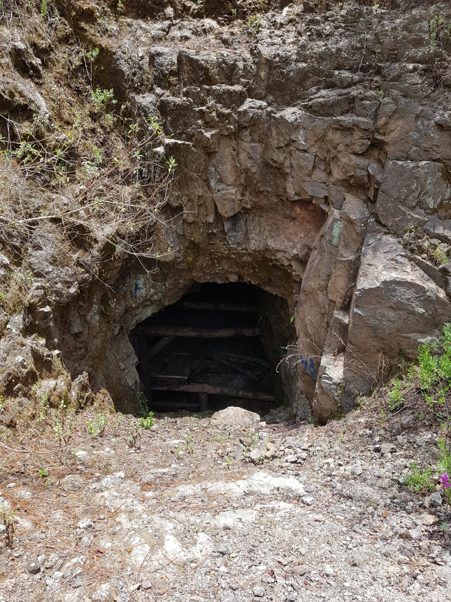

La mina se encuentra ubicada a un par de horas dentro del mismo estado de Jalisco. Nuestra mina se descubrió y trabajó desde la epoca colonial el cuál trajo grandes cambios a la minería mexicana.
El principal mineral que se explotó por parte de los Españoles fue el oro, hasta los años iniciales de la cuarta década del siglo XVI cuando comenzaron a beneficiarse las primeras minas de plata descubiertas en Taxco. Pequeños hallazgos posteriores en diversas regiones de la Nueva España incrementaron la producción argentífera, hasta que al norte Zacatecas reveló sus inmensas posibilidades5. El aumento en la producción de plata se dio de manera exponencial, pudiendo ver en el labrar de la Casa de la Moneda donde en el año de 1700 sólo era de tres millones trescientos mil pesos; en el de 1750 llegaba ya a trece millones setecientos mil, y en el de 1804 ascendía nada menos que a veintisiete millones. 5 La producción argentífera mexicana fue en el siglo XVIII mayor que la del resto de América y casi igual a la producción mundial. A finales de la época colonial se creó el Real Cuerpo de Minería de la Nueva España, el cual promulgó las Ordenanzas Mineras y se abrió el Real Seminario de Minas.
Tipos de Minería más Comunes
Minería de superficie La minería de superficie es la más adecuada para extraer minerales que están cerca de la superficie de la tierra. También suele ser un método de minería más rentable que la minería subterránea. Los minerales comunes que se extraen mediante la minería de superficie son algunos de los más extraídos, como el carbón, el hierro y la bauxita.
Minería subterránea (o minería subsuperficial) La minería subterránea es mejor para extraer minerales que se encuentran en las profundidades de la superficie de la tierra. Entre los minerales comunes que se extraen mediante la minería subterránea se encuentran el oro, el plomo y la plata. Es importante recordar que muchos minerales se pueden extraer tanto mediante la minería superficial como la subterránea. La relativa profundidad del yacimiento y el valor económico del mineral tienen un papel importante a la hora de determinar qué método de minería se debe utilizar. Una mina subterránea puede tener una profundidad de 300 metros o de 3 kilómetros. Por ejemplo, la mina subterránea más profunda de la tierra, la mina de oro Mponeng, que se encuentra en Sudáfrica, tiene una profundidad operativa de más de 3.1 km.
Minería de placer La minería de placer es el método de separar metales valiosos de sedimentos mediante un tamizado. Este tipo de minería se lleva a cabo en lechos de ríos, arenas y entornos donde hay una acumulación natural de sedimentos. Entre los minerales comunes que se recogen mediante la minería de placer se encuentran el platino, el estaño y los diamantes.
Minería in situ La minería in situ es el método de recuperar minerales de la tierra sin extraer la mezcla de rocas y minerales de la superficie para su procesamiento. Esto se logra al inyectar una solución que disuelve el mineral en su ubicación original y se bombea la solución que ahora incluye los minerales hacia la superficie. El mineral más común que se extrae mediante la minería in situ es el uranio. Para los mineros, cuatro de las consideraciones que incluyen en la elección entre estos métodos de minería son la ubicación del mineral, el valor financiero del yacimiento, las consideraciones medioambientales y la composición química del mineral.